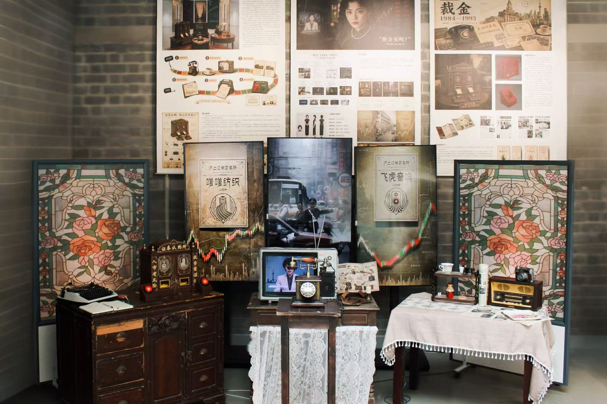
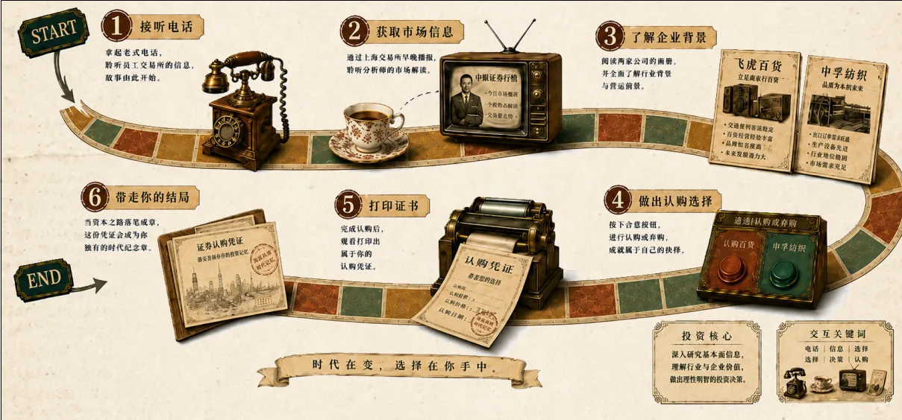
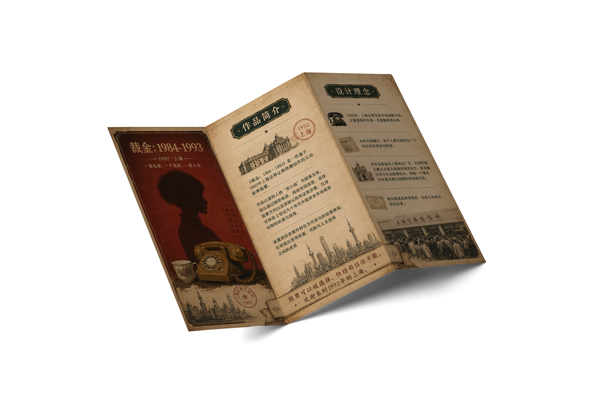
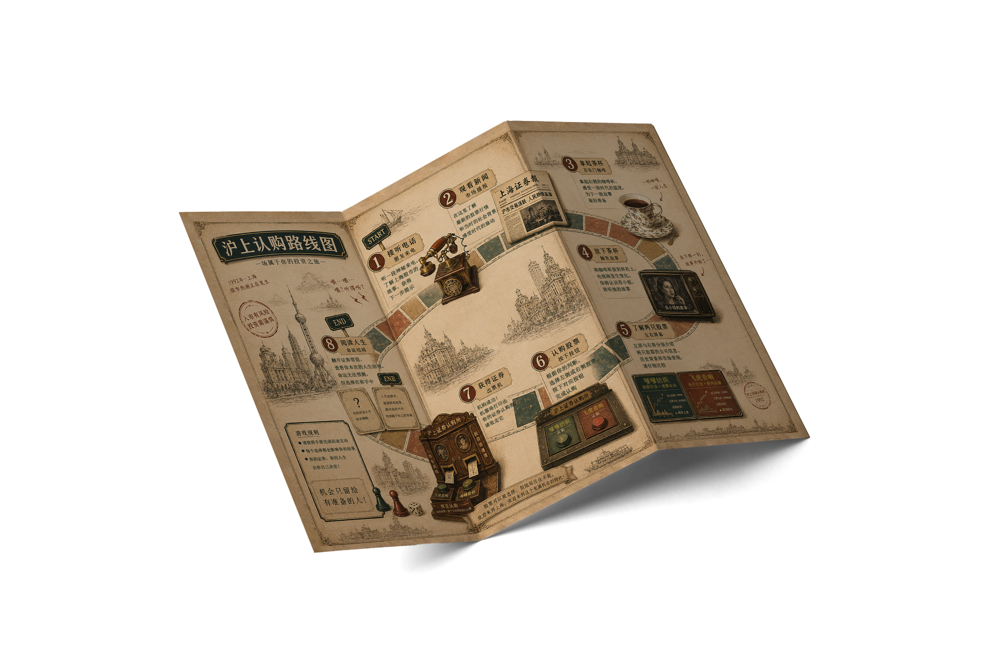
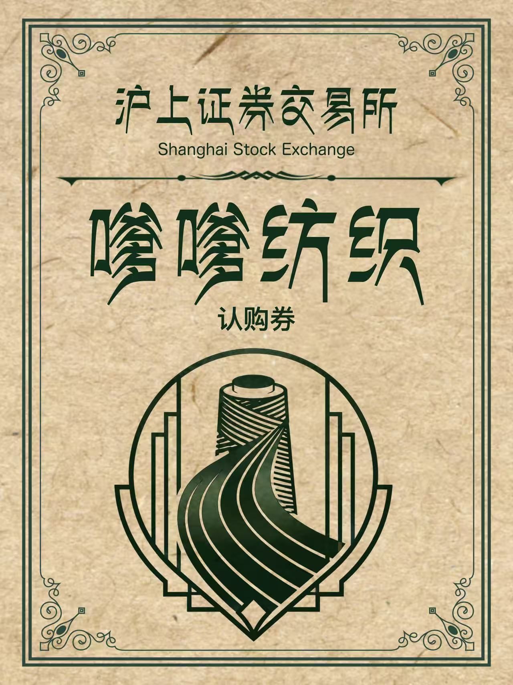
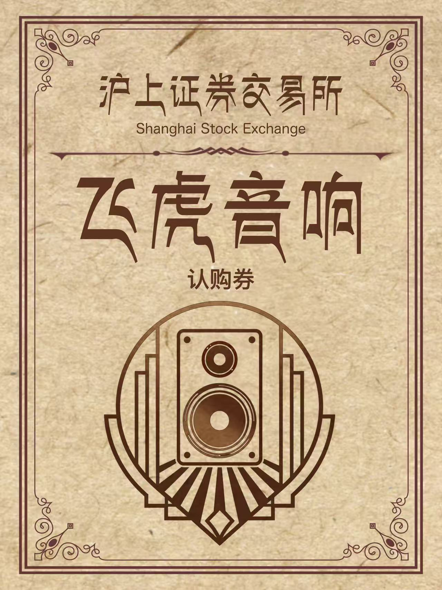
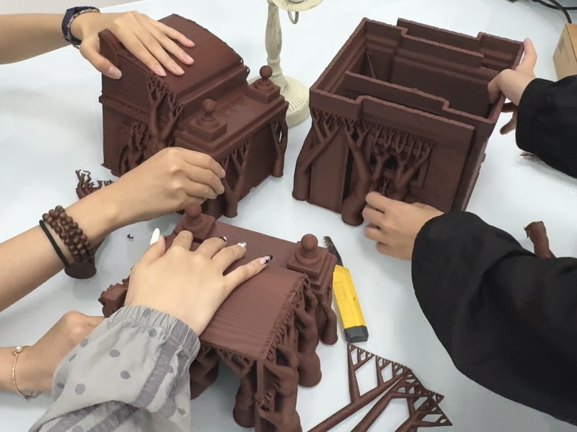
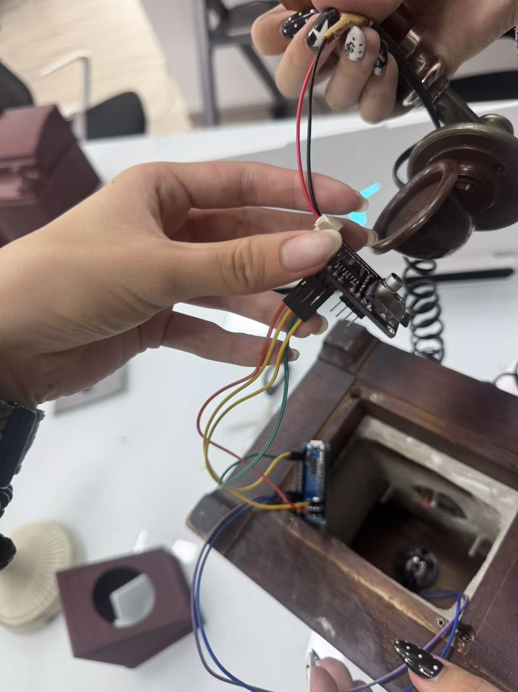
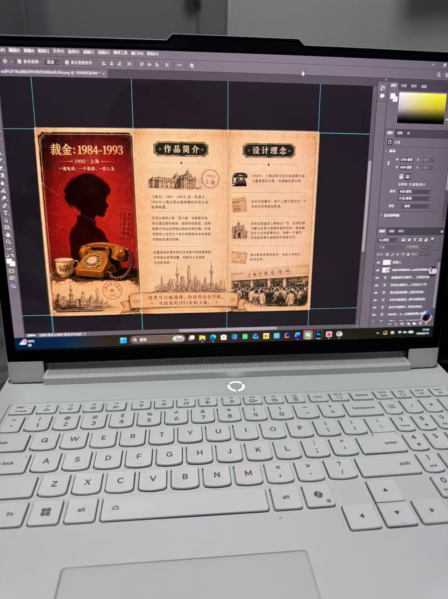
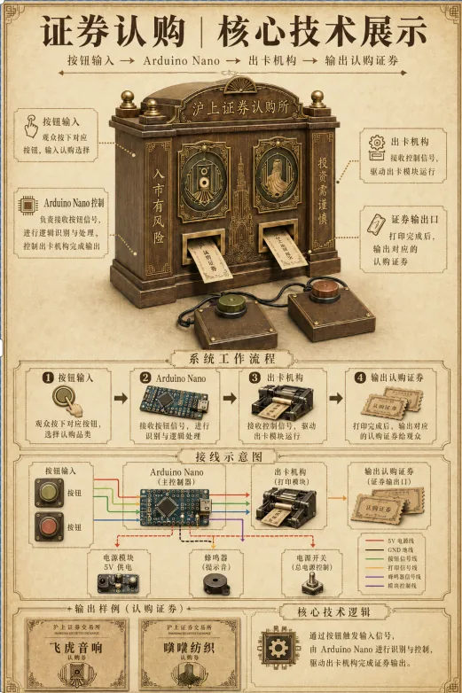

拿起电话
拿起真实电话，听到关于证券市场的消息。观众的动作开启叙事，线索不再只写在展板上。
信息抵达 / TELEPHONE
1992年的上海，关于证券的消息在报纸与电话之间流转。苏小姐的房间里，日常生活也悄悄被时代的风向改变。
《裁金 1984—1993》是一件可进入的线下互动叙事装置，以中国股票市场发展初期为背景，将证券认购热潮放进一个人的生活空间。观众走进苏小姐的房间，亲手触发电话，并将茶杯放到指定位置，再到证券认购机前作出判断、领取纸质结果票。
装置用股票认购证串起城市记忆与个人命运。电话里的消息、由茶杯触发的电视影像和最终拿到手中的票据，让信息有限时的机遇、犹豫与风险变成一次身体经验。
拿起真实电话，听到关于证券市场的消息。观众的动作开启叙事，线索不再只写在展板上。
信息抵达 / TELEPHONE先在电视里看到证券热的新闻；将茶杯放到桌上指定位置后，电视才切换到苏小姐的生活影像。
情境切换 / TEACUP在证券认购机前选择纺织或音响。机器吐出一张带人物故事与命运结果的实体票据，让判断留在手中。
结果生成 / CERTIFICATE
走进装置时，电视先播放证券热的影像。将茶杯放到桌上指定位置，电视才切换到苏小姐的生活。市场的声音与一个人的日常，由观众的动作连接。
默认播放。关于市场的新闻和城市里的讨论，先把观众带进那个年代。
茶杯触发画面切换。镜头从行情回到房间，让观众看见数字背后的个人生活。
以上是线下装置电视中使用的两段影像；网页播放器用于展示素材，不会感应实体茶杯。
这支作品影像将装置空间、观众的线下交互流程，以及电视中的叙事内容剪在一起。它能帮助你了解现场如何运作；上方两段则是分别在电视里播放的原始影像。
三段竖屏影像共同构成展场的时代氛围：两侧是认购券与行情变化，中间是城市与证券热的历史画面。
它们都是背景展示，不属于电视的茶杯交互，也不会随茶杯的位置切换。
这件作品由可以拿起、触碰和带走的物件组成。三折页引导观众进入房间；证券认购机与纸质票据，承接故事的最后一步。




每张结果票对应一位虚构人物的不同人生。观众在现场拿走票据，也带走一个不确定的结局。



这是从线下装置抽出的一段网页体验。现场的电话、茶杯定位、电视切换与实体出票，仍需要你亲自触碰。选择一张认购券后，你将化身券背后的一位人物，走过一段属于自己的命运。结果随机出现；再次体验，也许会活出另一个故事。

证券认购机 · 装置设计图